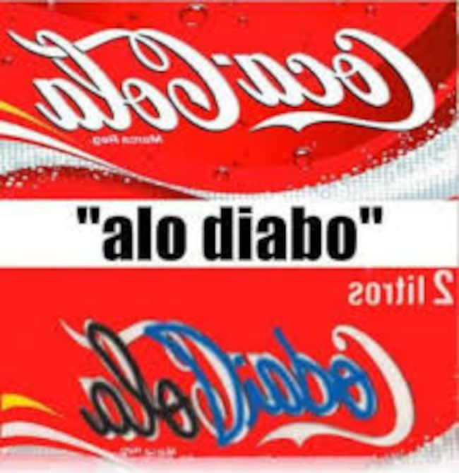

oque são mensagens subliminares?
As mensagens subliminares são estímulos visuais ou auditivos inseridos de forma discreta em mídias, como filmes, músicas ou anúncios, com o objetivo de influenciar o comportamento ou as atitudes de uma pessoa sem que ela perceba conscientemente. Essas mensagens podem conter todo tipo de conteúdo, desde terror até conteúdo sexual, apresentados de forma discreta.
qual o perigo?
O perigo das mensagens subliminares reside no fato de que elas podem influenciar o comportamento e as atitudes das pessoas sem o seu consentimento ou conhecimento. Isso pode ser usado para manipulação psicológica, promover comportamentos indesejados, incentivar o consumo de produtos ou serviços de maneira não ética, e até mesmo impactar negativamente a saúde mental ao introduzir conteúdos perturbadores ou inadequados.
exemplos:
alo diabo
Ao vermos o símbolo da Coca-Cola com seu formato normal, não percebemos nada, mas ao colocá-lo ao contrário, percebemos a frase "alô diabo", o que pode estar ligado ao fato de a Coca-Cola ser prejudicial à saúde e, mesmo assim, as pessoas continuam a consumi-la. Isso é parecido com o fato de que o diabo atua nas nossas vidas sem que percebamos, assim como a Coca-Cola, que destrói nossa saúde a médio e longo prazo. Afinal, por que isso ainda é permitido?
Backmasking
Backmasking é uma técnica de áudio onde uma mensagem é gravada de forma que só pode ser ouvida claramente quando a gravação é tocada ao contrário. Essa técnica foi usada em várias músicas principalmente na década de 1960 e 1970, e gerou controvérsia devido a alegações de que mensagens subliminares estavam sendo inseridas nas músicas.
xuxa
Xuxa Meneghel, uma figura icônica da televisão brasileira, foi envolvida em supostas mensagens subliminares satanicas em seus programas infantis. Rumores afirmavam que algumas de suas músicas continham backmasking com mensagens controversas, o que gerou preocupações entre os pais e debate na mídia.
Xuxa blasfemou contra Deus diversas vezes, entre elas quando ela disse que Deus era gay, e outra foi quando ela propôs reescrever a bíblia pesquise.
disney
As mensagens subliminares da Disney são as mais óbvias e explícitas. No entanto, já as coloquei no meu site da Terra Plana. Se tiver interesse, este é o link para o site das mensagens subliminares da Disney.
simbolo da apple o fruto proibido

O símbolo da Apple representa uma maçã mordida. Acredita-se que este símbolo simbolize o fruto proibido de Adão e Eva. A Bíblia não especifica qual era o fruto nem se ele ainda existe, mas a Apple faz uma clara alusão ao escolher uma maçã mordida como seu logo.
mensagem final.
Por fim, meus irmãos, continuem vigiando e estejam sempre alertas, porque o lado negativo também é poderoso. Mantenham sua fé em Deus e nas pessoas, permaneçam fortes na justiça. Saibam que aqueles que confiam no Senhor nunca foram confundidos. E não se esqueçam: o diabo está nos detalhes.